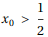であれば、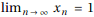であることを示せ。
東京大学 2005年 理科 第3問
問題
関数f(x)を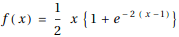とする。ただし、eは自然対数の底である。
(1) 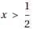ならば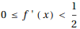であることを示せ。
(2)  を正の数とするとき、数列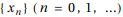を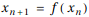によって定める。
を正の数とするとき、数列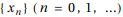を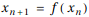によって定める。
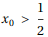であれば、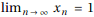であることを示せ。
解答
(1)
Reduceを用いて命題が成立することを証明する。
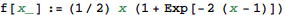

(2)
初項が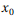で、数直線上で1との距離が半分になっていく数列 を考える。
を考える。
漸化式は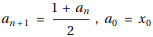で表され、一般項は
である。従ってすべての実数に対し、 はn→∞で1に収束する。
はn→∞で1に収束する。
関数 とすると、
とすると、 の漸化式は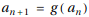と表すことができる。
の漸化式は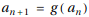と表すことができる。
関数y=x,y=f(x),y=g(x)を図示すると下図となる。
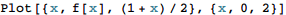
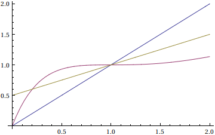
(i) 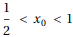のとき

だから、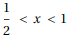ならばx<g(x)<f(x)<1が成り立つ。
従ってならば、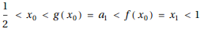であり、
g(x)は単調増加関数であるから、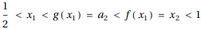が成り立つ。
これを繰り返すことですべての自然数nで常に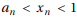が成り立つ。
数列 はn→∞で1に収束するから、はさみうちの原理により、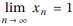である。
はn→∞で1に収束するから、はさみうちの原理により、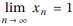である。
(ii) 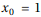のとき
f(1)=1だから、すべてのn=0,1,...について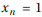である。
(iii) 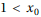のとき

だから、1<xならば1<f(x)<g(x)<xが成り立つ。
従ってならば、(i)と同様に常に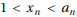が成り立つ。
(i)と同様に、数列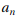はn→∞で1に収束するから、はさみうちの原理により、 である。
である。
(i), (ii), (iii)より題意は示された。